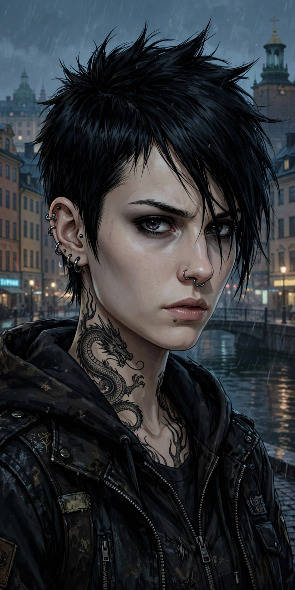

Lisbeth Salander is a fictional character created by Swedish author Stieg Larsson, the protagonist of the Millennium series, first appearing in The Girl with the Dragon Tattoo (2005).

Lisbeth SalanderSalander is a brilliant computer hacker (alias "Wasp"), with a photographic memory, piercings and a large dragon tattoo. Socially withdrawn and distrustful of authority after childhood abuse and wrongful psychiatric commitment, she is fiercely independent and exacts revenge on men who harm women.
Hired by security firm Milton Security, she investigates journalist Mikael Blomkvist, then partners with him to solve the Vanger disappearance. Later novels explore her past, her father Alexander Zalachenko, and state conspiracy. Posthumous sequels by David Lagercrantz and Karin Smirnoff continued the series.
Salander became an iconic, unconventional heroine, praised for subverting crime-fiction tropes, though debated for depictions of violence. See Stieg Larsson and The Girl with the Dragon Tattoo.